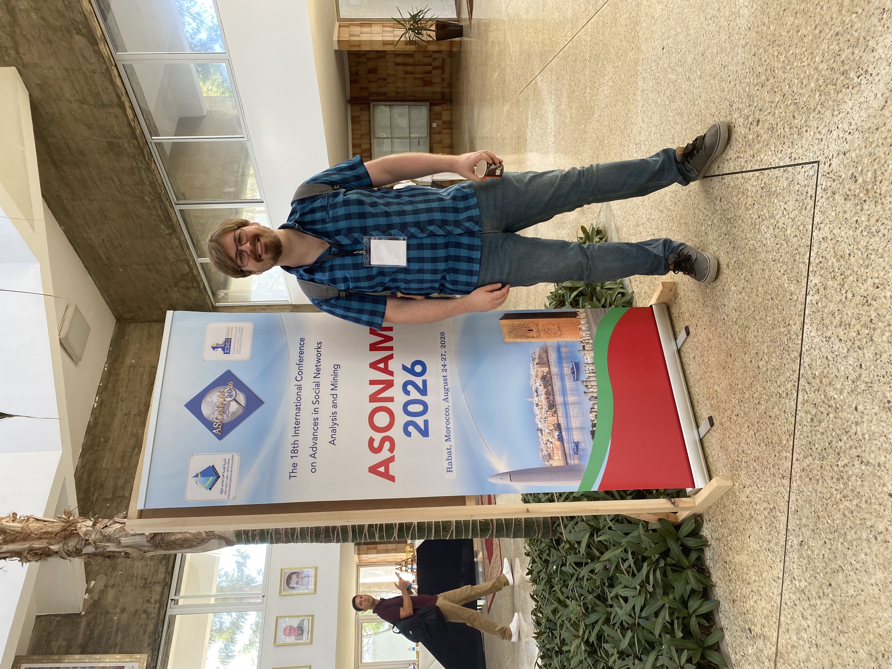

Abstract. In this paper, we present a novel interpretable and computationally efficient approach to a temporal collaborative recommender
system that utilizes linear clustering to group users’ items, enabling temporal context-aware recommendations. We use an interval graph model
to calculate clusters that capture a target user’s behavior. We then use a
weighted bipartite graph model, whose vertices represent clusters, to extract recommendations. The framework we present is general enough so
that it can be used with alternate interval graph clustering algorithms.
We present a detailed analysis for the time complexity of our system
using refined metrics that can help to provide insight into the behavior
of the algorithms for specific datasets. We tested our system on three
datasets, comparing it to five baseline algorithms that are likewise interpretable and of computational complexity comparable to ours. Our
findings show that our system scales efficiently and offers improvements
over the Jaccard Coefficient and other temporal measures, particularly
for non-sparse data sets.